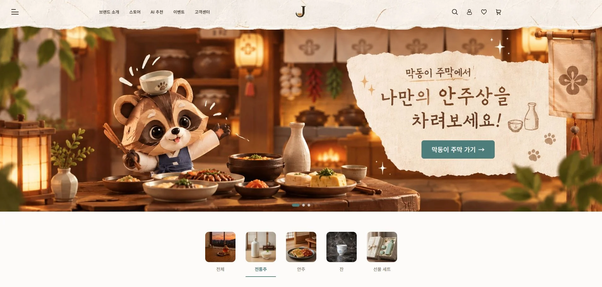
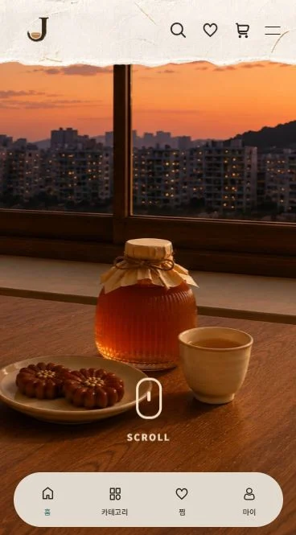

팀 · 역할 분담 · 담당 페이지 · Git 협업 · GSAP ·
팀 · 역할 분담 · 담당 페이지 · Git 협업 · GSAP ·
팀 · 역할 분담 · 담당 페이지 · Git 협업 · GSAP ·
팀 · 역할 분담 · 담당 페이지 · Git 협업 · GSAP ·
작성 예시
React · Git · GSAP
팀 · Git 협업


JAJAK
AI 기반 전통주 큐레이션 쇼핑몰
상세 보기 ↗
기기 등장 다시 보기